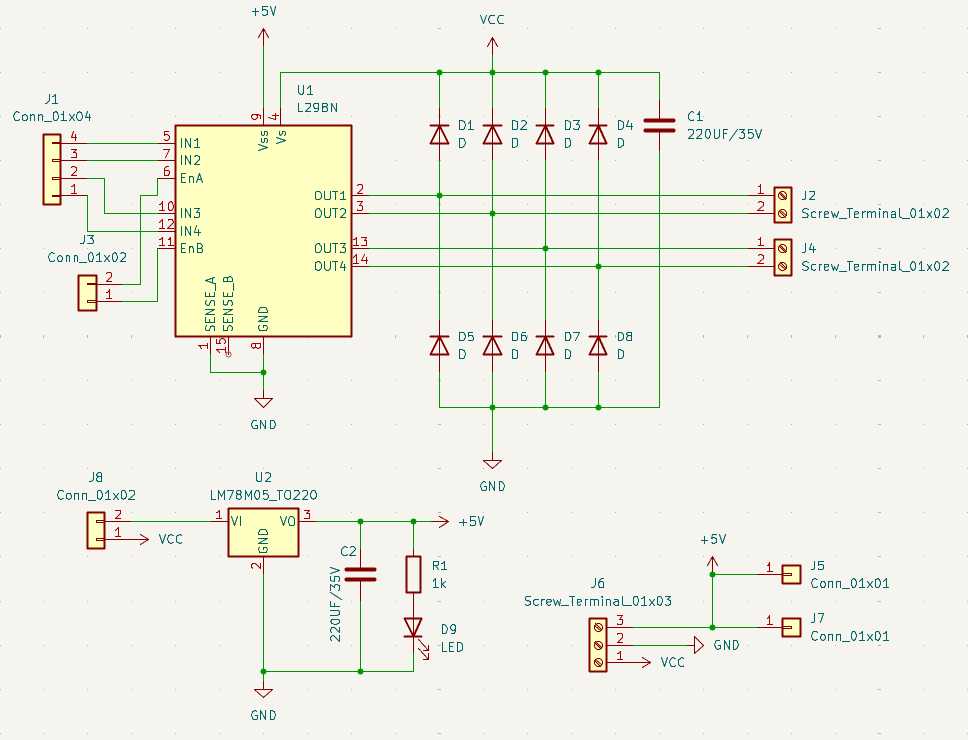

L298N Motor Driver PCB Design


An ongoing KiCad PCB design study project in RIME Robotics Society focused on designing and building an L298N motor driver board.

An ongoing KiCad PCB design study project in RIME Robotics Society focused on designing and building an L298N motor driver board.